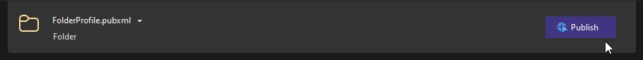
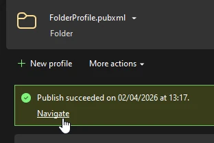

Building
Beginner
Currently, release versions of Stride games cannot be built using Game Studio. Instead, you can use your IDE or the command line.
Tip
It's recommended to first delete everything in the publish directory to cleanup any unused folders.
Make sure to setup your game properly. For more information, visit this page.
In the Solution Explorer panel, right click on the platform package you want to build and select Publish.

In the newly opened tab, click the Publish button.

Once the application finishes building, click Navigate to open the folder containing your build.
